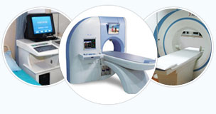

-
印象“第四届长城国际男科论坛”“第四届长城国际男科论坛”是由中国医师协会、中国工程院、北京大学泌尿外科研究所共同主办，中国工程院院士郭应禄教授和美国旧金山大学ＴＯＭ Ｆ Ｌｕｅ教授任大会主席。来自美国、澳大利亚、新加坡、韩国等国内外著名泌尿男科学专家，进行了男科领域基础与临床研究最新进展的研讨。大会主题为“规范男科疾病诊疗……【详细】
元旦春节，专家照常坐诊
元旦将至，新春佳节也已不远，南宁中山医院作为南宁市专业的男科医院，为了方便患者看病，决定元旦、春节假期期间不放假，专家照常坐诊。假期内很多人早就已筹划好了假期安排。南宁中山医院专家提醒大家，工作累了近一年，在假期旅游、休闲、娱乐的同时，不要忘记抽出时间为自己的身体健康做个诊疗，以便假期后有更旺盛的精力投入工作，更健康……【详细】


 如今前列腺炎已经成为很多男人的难言之隐，甚至不少人已经达到“谈炎色变”的地步，一提到前列腺炎就想到性功能障碍或者男性不育。前列腺炎真的是男性不育的“幕后黑手”？……【详细】
如今前列腺炎已经成为很多男人的难言之隐，甚至不少人已经达到“谈炎色变”的地步，一提到前列腺炎就想到性功能障碍或者男性不育。前列腺炎真的是男性不育的“幕后黑手”？……【详细】-
更多精彩内容
许耕宇 主任医师 耕宇，从事泌尿科临床工作30余年，具有丰富的临床经验，熟练掌握各类泌尿外科国际先进仪器的操作，对泌尿生殖感染的临床诊治有独到之处，尤其擅长中西医结合的方法对前列腺疾病及性功能障碍、包皮包茎等疾病的治疗。
学术成绩：曾获得南宁市重大科研成果三等奖。1987年研制的“慢性前列腺炎局部给药导管”系国内外首创，获国家发明三等奖，1994年主创的“前列腺综合辩证治疗临床应用”获南宁市卫生局重大科技成果三等奖。先后撰写论文40余篇，编写各种医学专业书籍12本，另有7篇论文刊登于国外着名杂志，先后获各类国家专利证书4项。
专业资质 治疗更安心
南宁中山医院是南宁市首家大型男性专科医院，是一所集临床、教学、科研、预防、保健、康复为一体的现代化专业男科医院。医院设施先进、专科齐全、技术力量雄厚、服务热情周到，是“全国百姓放心医院”。
科学诊疗 效果更明显
南宁中山医院是专业引进全系列男科治疗设备医院，像大型医院不具备的医疗设备如：性功能障碍康复治疗系统、ＶＬＨ－ＨＳ不孕症工作站、全电脑阳痿（ＥＤ）数码检测系统、前列腺介入导融系统、美国顺康前列腺
人性化服务更贴心
南宁中山男子医院在服务上也以患者为中心，以优质的医疗服务于大众。适时推出：网上在线咨询、免挂号绿色通道以及男性24小时综合门诊部。免除了排队挂号的烦恼，并保护了患者的隐私。开创了南宁医疗就诊模式